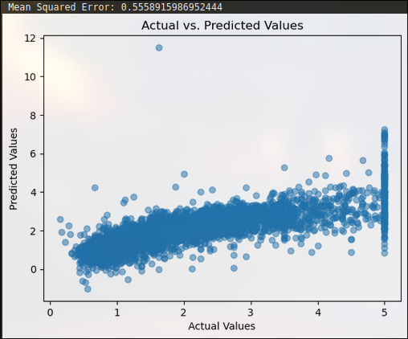
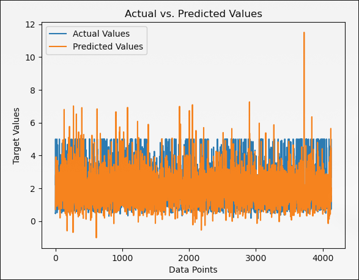

Better Case for Linear-Regression
Linear Regression is a good fit for data that follows a straight line, like a line on a graph. That means there should be a pattern if the data.
The following are the areas where linear regression is a good fit:
-
Linear Relationships: Linear regression is like drawing a straight line to connect the dots on a graph. If the dots (or data points) roughly follow a straight line pattern, then linear regression works well because it can predict what the next dot might be.
-
Interpretability: Linear regression tells us how much one thing affects another. For example, if we're trying to figure out how much studying affects test scores, linear regression helps us understand how much studying more might increase our test scores.
-
Prediction with Continuous Variables: Linear regression is good at predicting things that keep changing smoothly, like temperature or price. It's like guessing tomorrow's weather based on today's temperature.
-
Statistical Inference: Linear regression helps us make educated guesses about a whole group of things based on a smaller sample. It's like looking at a few pieces of a puzzle and guessing what the whole puzzle might look like.
-
Stability and Robustness: Linear regression is not easily thrown off by small changes in data. It's like having a ruler that stays straight even if you shake it a little.
-
Feature Importance and Variable Selection: Linear regression helps us figure out which factors matter the most in making predictions. For example, if we want to predict how tall someone will be, linear regression helps us decide if age or nutrition matters more.
-
Predictive Power in Linear Relationships: When things change in a simple, straight-line way, linear regression is very good at predicting what comes next. It's like knowing that if you study one more hour, your test score might go up by a certain amount.
But sometimes, data doesn't follow straight lines. It can be all over the place, like a squiggly line or even a pattern that looks like a tree. In those cases, linear regression doesn't work well. That's when we might use decision trees, which are better at handling complex and non-linear relationships in data.
So, choosing between linear regression and decision trees depends on how the data behaves and what we want to find out. If things change in a nice, straight-line way, linear regression is great. But if the data is messy and doesn't follow a clear pattern, we might need a decision tree to help us make sense of it.
For example in python
from sklearn.linear_model import LinearRegression
from sklearn.datasets import fetch_california_housing
from sklearn.model_selection import train_test_split
from sklearn.metrics import mean_squared_error
california_housing = fetch_california_housing(as_frame=True)
X = california_housing.data
y = california_housing.target
X_train, X_test, y_train, y_test = train_test_split(X, y, test_size=0.2, random_state=42)
linear_reg = LinearRegression()
linear_reg.fit(X_train, y_train)
predictions = linear_reg.predict(X_test)
mse = mean_squared_error(y_test, predictions)
print("Mean Squared Error:", mse)
import matplotlib.pyplot as plt
plt.scatter(y_test, predictions, alpha=0.5)
plt.xlabel("Actual Values")
plt.ylabel("Predicted Values")
plt.title("Actual vs. Predicted Values")
plt.show()
Gives the following output:

Here the predicted values are not accurate since there is no linearity in the data.
Check for linearity
To check for linearity we use correlation coefficient. The correlation coefficient is a measure of how much two variables change together in a linear manner. If they change in a exponential manner the prediction will not be accurate.
In this case,
Correlation Coefficient: -0.017732492614194486
Which means that the correlation is near to zero and a linear relationship is not found.
So it is not good to apply linear regression here. This fact is clearly represented by the following line plot.
